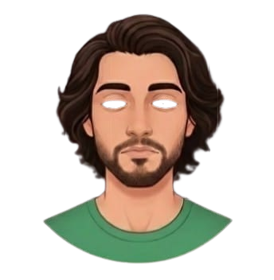

## 🚀 Live Demo
Klik link di bawah untuk mencoba webnya langsung:
[👉 Lihat Website Langsung](https://hayqalbanihakim212-crypto.github.io/my-template-web/bonus.html)


<!DOCTYPE html>
<html lang="en">
<head>
    <meta charset="UTF-8">
    <meta name="viewport" content="width=device-width, initial-scale=1.0"> 
    <title>Document</title>
</head>
<body>
  <div class="container-home d-flex justify-content-center">
    
    <div class="eye" id="eye-left">
      <div class="pupil"></div>
    </div>
    <div class="eye" id="eye-right">
      <div class="pupil"></div>
    </div>
    <style>
      .container-home {
        width: 300px;
        border-radius: 15px;
      }

      .base-image {
        width: 500px;
        display: flex;
        border-radius: 20px;
        justify-items: center;
        align-items: center;
      }

      .eye {
        position: absolute;
        background-color: #fff;
        border-radius: 50%;
        overflow: hidden;
        box-shadow: inset 5 5 5px rgba(0, 0, 0, 0, 5);
      }

      .pupil {
        height: 100%;
        width: 50%;
        background-color: #000;
        border-radius: 50%;
        position: relative;
        top: 50%;
        left: 50%;
        transform: translate(-50% -50%);
      }

      #eye-left {
        top: 35%;
        left: 37%;
        width: 9.4%;
        height: 4.1%;
      }

      #eye-right {
        top: 35%;
        left: 55.2%;
        width: 9.9%;
        height: 4.1%;
      }
    </style>
    <script>
      const eyes = document.querySelectorAll('.eye');
      document.addEventListener('mousemove', (e) => {

        eyes.forEach(eye => {
          const pupil = eye.querySelector('.pupil');

          const rect = eye.getBoundingClientRect();
          const eyeCenterX = rect.left + rect.width / 2;
          const eyeCenterY = rect.top + rect.height / 2;
          const angle = Math.atan2(e.clientY - eyeCenterY, e.clientX - eyeCenterX);

          const distance = rect.width / 10;
          const x = Math.cos(angle) * distance;
          const y = Math.sin(angle) * distance;

          pupil.style.transform = "translate(calc(-50% + " + x + "px), calc(-50% + " + y + "px))";
        });
      });
    </script>
<body>
    
</body>

</html>
